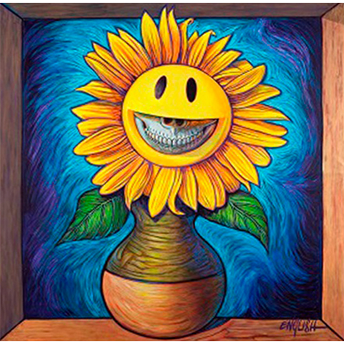
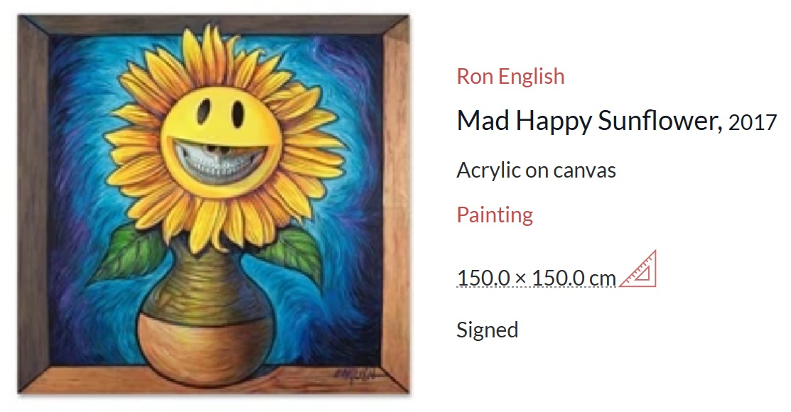
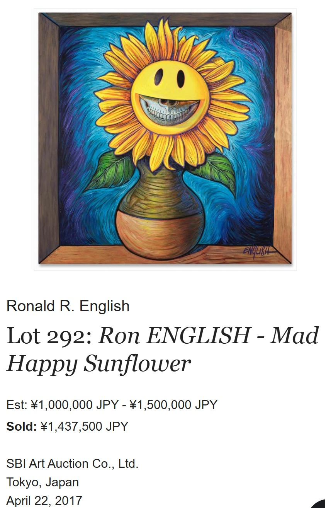
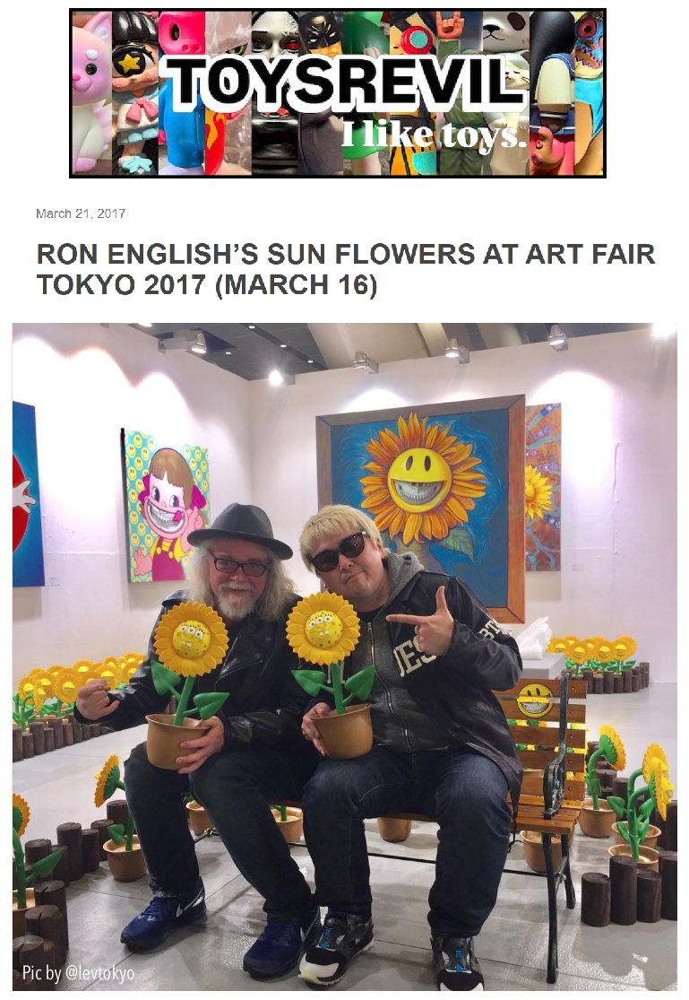
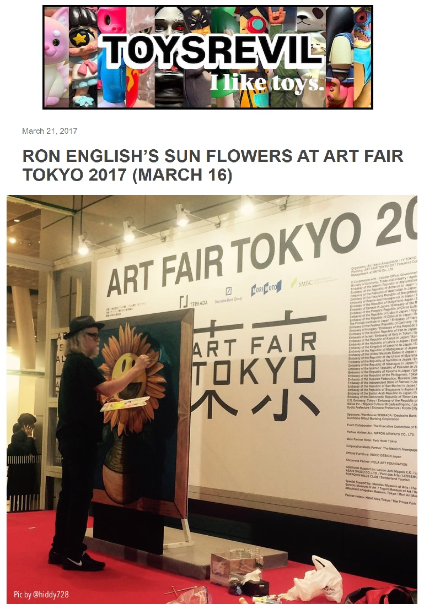
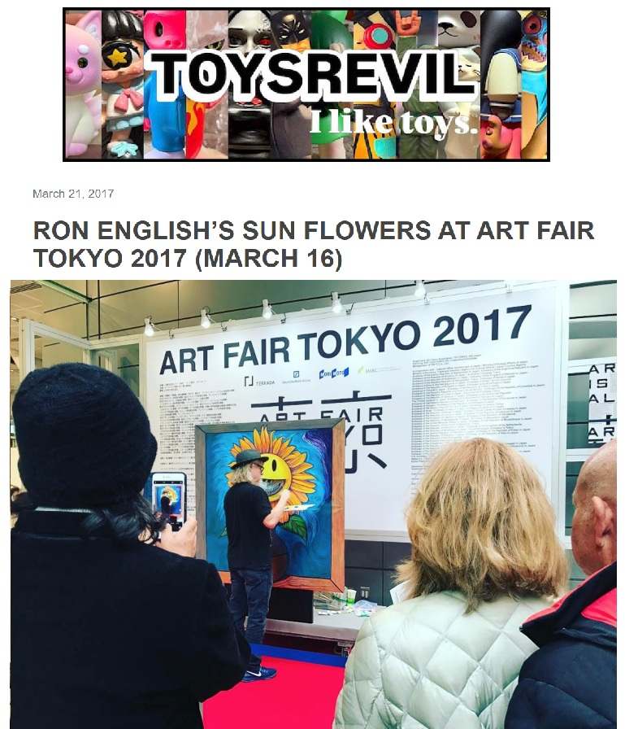
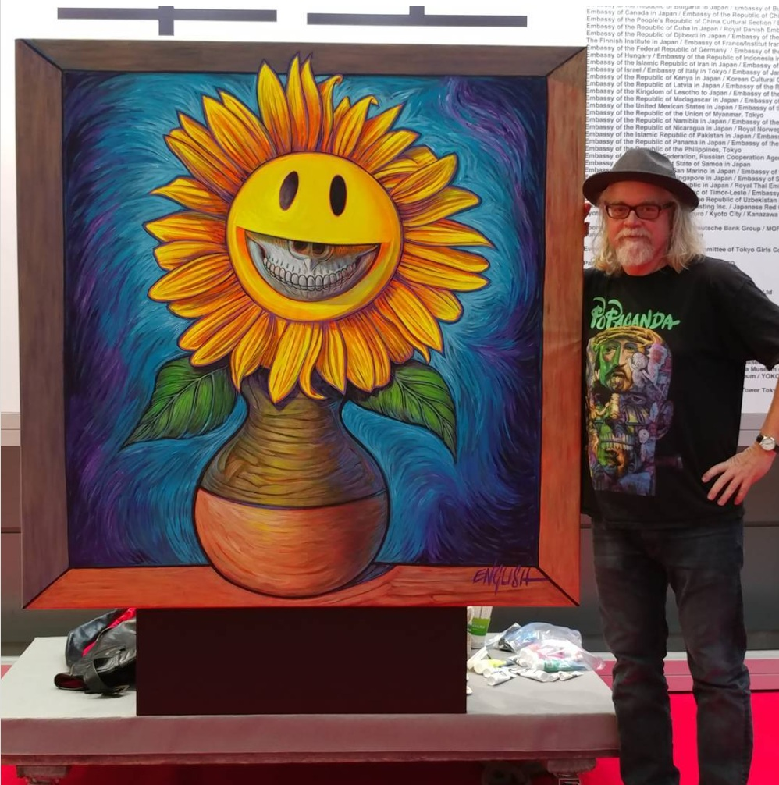

Exhibitions
Art Fair Tokyo 2017, Tokyo International Forum, Tokyo, Japan, March 16–19, 2017.
Ancillary Documentation
The following materials document auction records, Art Fair Tokyo 2017 appearance, live-painting documentation, and Ron English personal photo archive material connected to the work.





